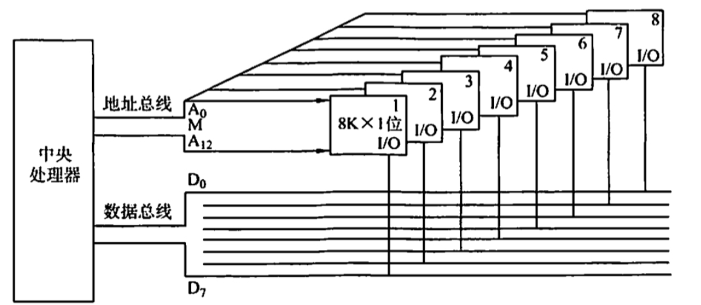
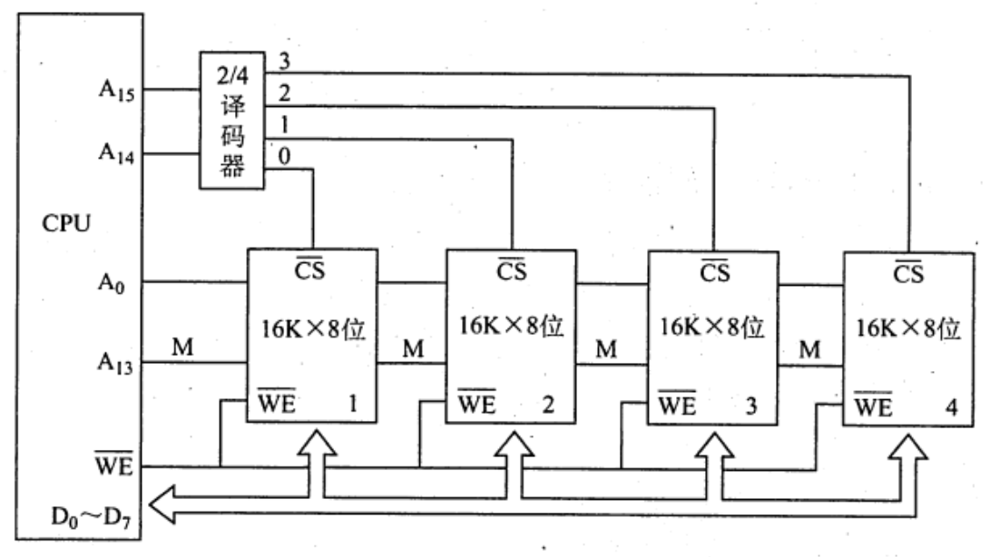
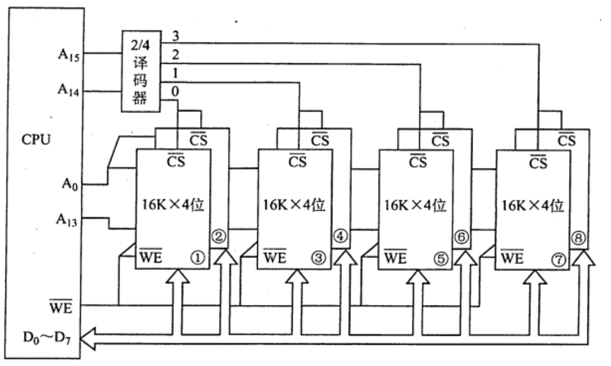
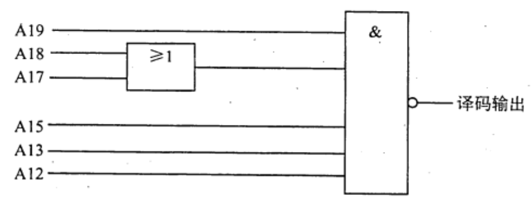

2022.09.01
我的理解：
位扩展对应数据线（比如八个一个字1bit的芯片拼成8bit一个字的芯片）
字扩展对应地址线（比如增加两个最高位用来指定某个芯片）



| 信号（四根线） | 对应芯片 |
|---|---|
| 0001 | 0 |
| 0010 | 1 |
| 0100 | 2 |
| 1000 | 3 |
| 信号 | 对应芯片 |
|---|---|
| 00 | 0 |
| 01 | 1 |
| 10 | 2 |
| 11 | 3 |
【答案】：D
【答案】：A
【答案】：16，256KB=2^18B，2^18B / 2B = 2^17B，D
【答案】：A
【答案】：C
【答案】：2^24/2^19=2^5，32/8=4，D
【答案】：？C -> A！接入各芯片地址端的是地址线的低 12位！
8个芯片，每两个芯片绑定成一组（位扩展），一共组成4组，$2^2\to2bits$, $A_2,A_3$
若内存地址区间为 4000H~43FFH，每个存储单元可存储16位二进制数，该内存区域用4片存储器芯片构成，构成该内存所用的存储器芯片的容量是（ ）。 A. 512×16bit B. 256×8bit C. 256×16bit D. 1024x8hit
【答案】：3FFH + 1 = 2^11，2^11 * 2 = 2^12 A. 9+2+2=13 x B. 8+1+2=11 x C. 8+2+2=12 √ D. 10+1+2=13 x
新的答案（2022.11.9）
4000～43FF：一共是2^10个字，每个字2B。
C选项每个字也是2B，用四片芯片构成——1024/4=256，正确，C。
【答案】：16K = 2^14。C-9=1100-1001=0011，0011 FFFF=2^18，18-14=4，D
若片选地址为 111 时，选定某一32Kx16位的存储芯片工作，则该芯片在存储器中的首地址和末地址分别为（ ）。 A. 00000H，01000H B. 38000H，3FFFFH C. 3800H，3FFFH D. 0000H，0100H
【答案】：111，2^15，B
如下图所示，若低位地址（A0～A11）接在内存芯片地址引脚上，高位地址(A12-A19）进行片选译码（其中A14和A16未参加译码)，且片选信号低电平有效，则对图中所示的译码电路，不属于此译码空间的地址是（ ）

A. AB000H ~ ABFFFH B. BB00OH ~ BBFFFH C. EFOOOH ~ EFFFFH D. FEOOOH ~ FEFFFH
【答案】：
A：AB=1010 1011 -> 101 111 B：BB=1011 1011 -> 111 111 C：EF=1110 1111 -> 111 111 D：FE=1111 1110 -> 111 110 $$ \overline{CS}=\overline{A19 \cdot (A18+A17)\cdot A15 \cdot A13 \cdot A12} $$ D
这道题的意思是某一个芯片的片选信号是这样的译码电路，然后看看给定的信号能不能让该芯片选通
【2009统考真题】某计算机主存容量为 64KB，其中ROM区为 4KB，其余为 RAM区，按字节编址。现要用2Kx8位的ROM 芯片和4Kx4 位的 RAM 芯片来设计该存储器，需要上述规格的ROM 芯片数和RAM 芯片数分别是（ )。 A. 1, 15 B. 2, 15 C. 1, 30 D. 2, 30
【答案】：64KB = 60KB + 4KB。 ROM：4/2=2 RAM：60/2=30 D
【2010统考真题】假定用若干 2Kx4 位的芯片组成一个 8Kx8 位的存储器，则地址 0B1FH 所在芯片的最小地址是（ ）。 A. 0000H B. 0600H C. 0700H D. 0800H
【答案】：4，2->3位，2K=2^10，x xx00 0000 0000，B=1011，1000=8，D8Kx8 / 2Kx4 -> 字扩展 4, 位扩展 2
2K $\to 2^{11}$
0B1F -> 【】【3bit】【4bit】【4bit】->【---x1】【x2---】
0B -> [x1,x2] = [0,1] -> 【0000】【1000】【0000】【0000】 -> 0800
【2011 统考真题】某计算机存储器按字节编址，主存地址空间大小为 64MB，现用4Mx8 位的RAM 芯片组成32MB 的主存储器，则存储器地址寄存器MAR 的位数至少是（ ） A. 22位 B. 23 C. 25位 D. 26
【答案】：64MB=2^{26}B，C
【2016 统考真题】某存储器容量为 64KB，按字节编址，地址 4000H~ 5FFFH 为 ROM区，其余为 RAM区。若采用8Kx4 位的 SRAM 芯片进行设计，则需要该芯片的数量是（） A. 7 B. 8 C. 14 D. 16
【答案】：0000 ～ 1FFF = 2^13，64-8=56，56/4=14，C
【2018 统考真题】假定 DRAM 芯片中存储阵列的行数为r、列数为c，对于一个2Kx1位的DRAM 芯片，为保证其地址引脚数最少，并尽量减少刷新开销，则r、c的取值分别是（ ）。 A. 2048, 1 B. 64, 32 C. 32, 64 D. 1, 2048
【答案】：解析 B：6+5 C：5+6 为了尽量少的刷新开销，C
【2021 统考真题】某计算机的存储器总线中有24 位地址线和32 位数据线，按字编址，宇长为32位。如果 00 0000H~3F FFFFH 为RAM区，那么需要512Kx8位的RAM芯片数为（） A. 8 B. 16 C. 32 D. 64
【答案】：2^22/2^19 = 2^3，8*4=32，C